RubyConf.PH 2014 参加レポート
RubyConf.PH 2014 参加レポート
書いた人：ささだ
2014 年 3 月 28～29 日に、フィリピンはマニラで RubyConf.PH 2014 が開催されました。 フィリピンでは初めての大きな Ruby イベントだったそうです。
著者（ささだ）は招待講演で呼んで頂いたので、参加することができました。 日本からの参加者は私一人だったようです。というわけで、参加レポートをお送りします。
- 季候も良く、中身も比較的濃い、良いカンファレンスでした。
- 次回は海沿いのリゾート地でやるそうなので、
- ぜひ参加されるといいんじゃないかと思います。
- 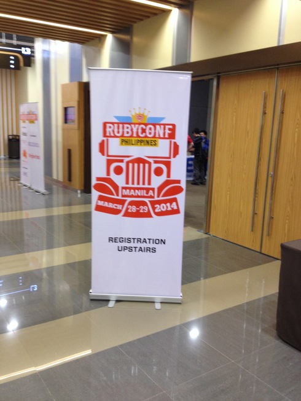
- 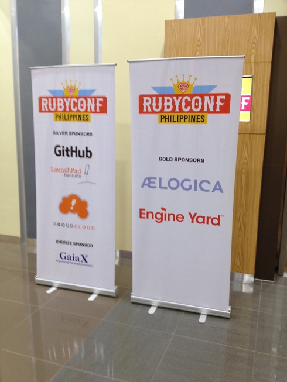
開催場所
RubyConf.PH 2014 はフィリピンはマニラで行なわれました。
- 私はフィリピンへ行くのが初めてだったので、どんなところかドキドキしていたのですが、日本から到着したニノイ・アキノ国際空港はとても綺麗な空港でした。ターミナルが変わると、また違うようではありますが。

- 降り立った空港でタクシーが捕まらず、空港で客引きしていたタクシーに乗ったのですが、
- なにやら高級なタクシーだったようでした（ハイヤー？）。フィリピンの通貨単位はフィリピンペソ（PHP と略す！）なのですが、帰りは 300 PHP（日本円で 700 円くらい） で済んだのですが、その空港発のタクシーでは 700 PHP（1600 円くらい） を取られてしまいました。が、ホテルまで 20 分くらいで 1600 円と考えると、日本人の感覚としては安いなぁ、といえるかと思います。

カンファレンスは SMX Taguig というところが会場だったのですが、 大きなショッピングセンターに併設したカンファレンスセンターでした。
- 写真は会場のコンベンションセンター。


- 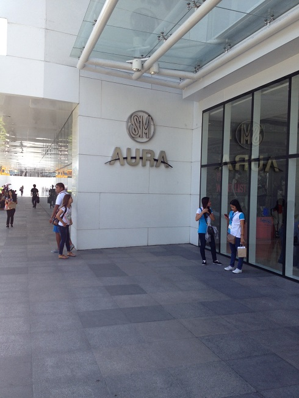

- 会場のある Taguig という地域はとても勢いを感じる地域でした。
- 高級そうなお店やマンションなどが建ち並び、多くの若い人が賑わっていました。
- さらに、多くの建物を建設中で、これから伸びていく地域であり、国なんだな、という印象をうけました。

実際、良い立地であったらしく、「日本でいう六本木みたいなところ」と教えてもらいました。そのため、治安もとても良いところだったそうです。日本人的には、六本木が治安がいいのか、というと、どうなのかわかりませんが。
- こちらは泊ったホテル。
- 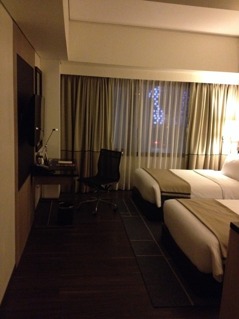
- 日本のお店も多くあり、新宿サボテンやユニクロなんかも並んでいました。
- ただ、フィリピンではユニクロは高級ブランドの 1 つ、という位置づけだと教えてもらいました。写真はいろいろ見つけた日本のお店。


- 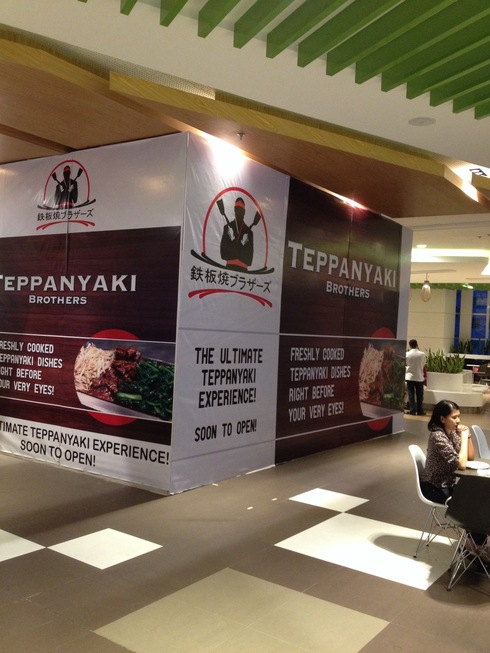


- コンビニをいたるところで見つけることができ、セブンイレブンやサークル K といった、よく知った名前もありました。
- どのコンビニにもイートインスペースがあるのと、大きな銃を持った警備員がいるところが、日本のコンビニとは違うところでした。
- 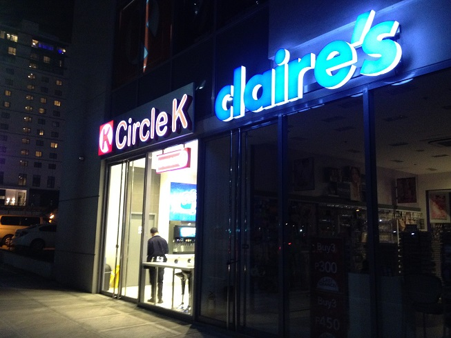
カンファレンスと発表
発表はシングルセッションで 2 日間行なわれました。 参加者は 200 人弱くらいだったと思います。 そこまで大きな感じではありませんでした。 シングルセッションで聞いているにはいい規模でしょうか。
発表内容は Schedule のページを見て想像して下さい。 タイトルでググると、資料も出てくるんじゃ無いかと思います。
キーノートは Konstantin Haase さんによる Architecting Chaos というタイトルで、Travis-CI がどのように Chaos と戦っているか、という内容だったような気がします。どうでもいい話になりますが、Konstantin は空港でバッゲージロストしてしまったらしく、会期中ずっとそのネタでいじられてました（こんな twitter アカウント：https://twitter.com/rkh_bag なんてもの作ったらしい）。
- 私の招待講演（もしかして 2 つ目のキーノートだったのかな）は、Ruby における GC のチューニングをどのようにすれば良いか、という話をしたかったのですが、つたない英語で（しかも、内容が難しくて）どれくらい伝わったかが難しいところでした。発表中、笑いどころではちゃんと笑ってくれ、それなりにやりやすい感じでした。ただし、小ネタはあまり受けが取れず、そういう意味で打てば響く感じでは無かったです。日本もたいていそうですよね。アジアだとこんな感じなんでしょうか。
- 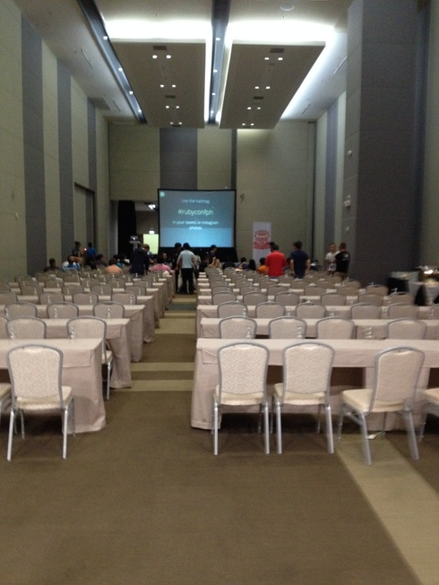
- 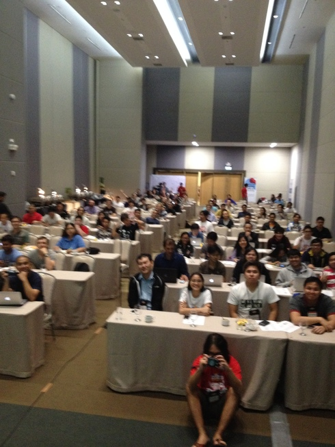
そういえば、日本とは違って、質問が結構飛んでいました。私の発表でも聞いてもらうことができました。カンファレンスで質問をする、というのは参加者や話者にとってカンファレンスの価値の 1 つだと思うので、こういう積極的な感じはとても良いと感じました。読者の皆さんも、カンファレンスに参加したら積極的に質問するといいと思います。一説によると、1 つのカンファレンスでは 1 つ以上質問をする、という目標をたてると良いようです。もう少し積極的に、1 日に 1 つ以上、質問してみるのはどうでしょうか。
他のカンファレンスでも聞くかな、という内容も多かったというか、海外の人が多かったですね。 ちょっと聞いてみたところ、フィリピンではあまり Ruby コミュニティはあまり活発じゃなかったようで、 他の海外のカンファレンス（RubyConf とか RubyKaigi とか）で聞くような話が多かった気がします。 なので、フィリピンならでは、というのはあまり無かったかもしれません。
- 朝行ってみると、レジストレーション会場でコーヒーやパンを頂くことができました。
- お昼は会場の両脇に料理が並ぶ、ビュッフェスタイルのものでした。
- 午前最後の発表中に料理の準備が始まり、お腹がすいてしまいました。

- ノベルティはこんな感じ。

- カンファレンスにはつきものの求人広告（手書き）もありました。
- 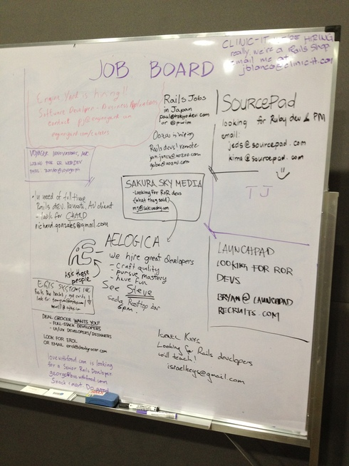
- 2 日目終了後、github 主宰の懇親会がありました。
- 小さなバーに沢山詰め込まれた感じでワイワイ騒ぐ、大変楽しい懇親会でした。
- 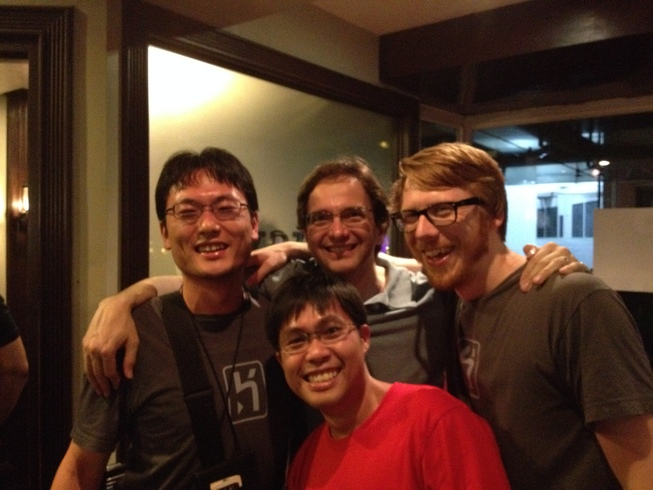
おわりに
簡単でしたが、RubyConf.PH 2014 の参加報告をお送りしました。 繰り返しになりますが、季候も良く、中身も比較的濃い、良いカンファレンスでした。 次回は海沿いのリゾート地でやるそうなので、ぜひ参加されるといいんじゃないかと思います。
- 私も、次も行くことができるのでしたら、行ってみたいと思います。
- 今回はカンファレンス前日の夜中に到着し、カンファレンス翌日早朝に日本に帰るスケジュールでしたので、
- 観光もほとんどできませんでした。次の機会にはもっと長く見て回りたいと思います。
- 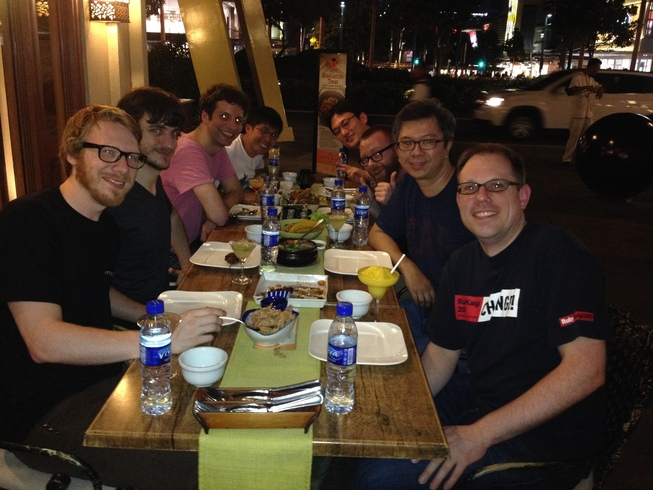
最後に、オーガナイザの Christopher Rigor からのメッセージを動画でもらってきましたので、ご覧下さい。